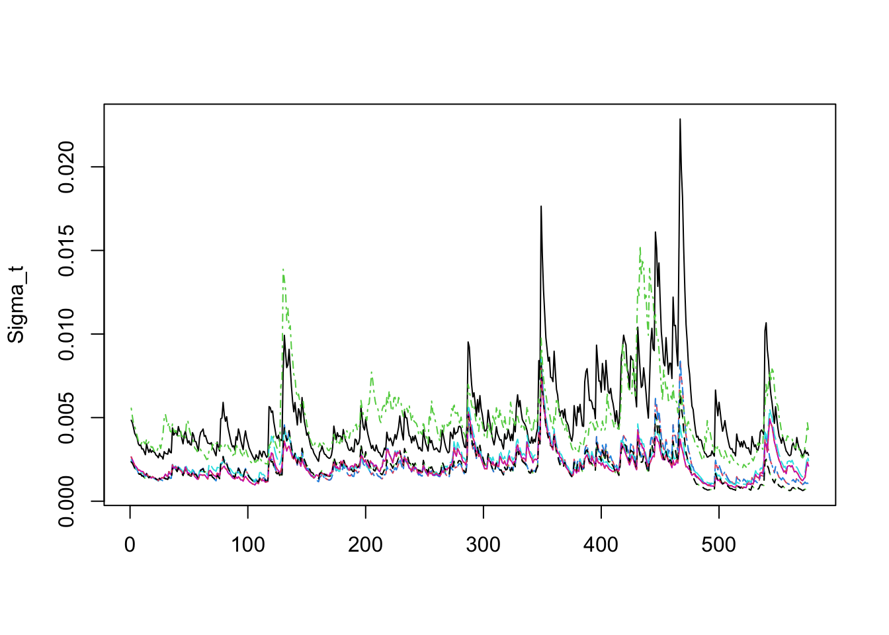
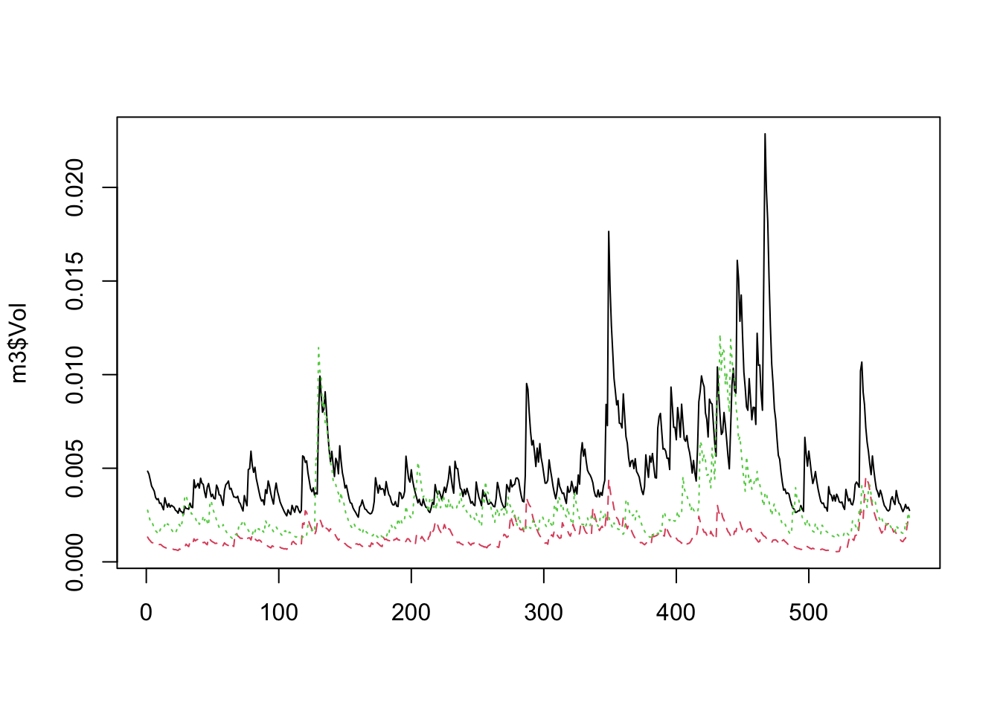

11 多変量ボラティリティ・モデル
多変量ボラティリティ・モデルは, 複数のリスク資産で構成されるポートフォリオ構築や, リスクの評価に不可欠な分散共分散行列の推定や予測に有用である.
多変量ボラティリティ・モデルの中でも特に多変量GARCH型モデルは 重要なクラスであり, 実務でも多く使用されている.
また, 多変量GARCH型モデルは, ファイナンス研究におけるボラティリティ・スピルオーバー現象を 計測する方法論としても重要である.
11.1 ボラティリティ・スピルオーバー (volatility spillover)
ある資産・市場・セクターで観測される不安定性, 価格のボラティリテが, (時間の経過と伴に) 他の資産・市場・セクターに伝波する現象は ボラティリティ・スピルオーバー (volatility spillover)と呼ばれる.
- 例. 株式市場のボラティリティが高まったとき,債券市場や為替市場のボラティリティが連動して変化するような状況
主なメカニズムとして, 情報伝達が挙げられている. 具体的には, 重要な経済指標の発表や企業業績の変化等, ある特定の市場で新たな情報 が発生すると, 投資家のポートフォリオのリバランス行動等を通じて, ボラティリティが他商品や他市場に波及する可能性等が考えられる.
ボラティリティ・スピルオーバーの計測の主要な方法論として, 多変量 GARCH型モデルが使われる. 多変量GARCHにより複数資産の分散共分散行列の動的な変化を同時モデリングできることから, どの資産・市場のボラティリティがどの程度他の資産・市場のボラティリティを波及させているかを評価することが可能となる. また, 代替的なアプローチとして, VARモデルをベースにした Diebold-Yilmaz Spillover Indexなどが挙げられる.
- Diebold and Yilmaz, (2009), Measuring Financial Asset Return and Volatility Spillovers, With Application to Global Equity Markets, Economic Journal, 119, 158-171.
- Diebold and Yilmaz, (2012), Better to give than to receive: Predictive directional measurement of volatility spillovers, International Journal of Forecasting, 28(1), 57-66.
多変量GARCHモデリングは, 二つの主要なチャンレジが存在する. すなわち,
- 次元の呪い (curse of dimensionality)
- 正定値性の維持
である.
11.2 多変量GARCHモデル: データ分析例 (Tsay, MTS, Ch.7)
- コードおよびデータの出所: http://faculty.chicagobooth.edu/ruey.tsay/teaching/introTS/ (一部改変)
教科書 (MTS) の著者Tsayが作成したパッケージMTSを利用する. MTSに含まれている関数群は, 出力結果が分かりにくかったり Rの操作上は必ずしも使い勝手は良くないが, 教科書の内容に即している点では学習用としてすぐれている.
多変量時系列データの条件付不均一分散性の検定
- Tsay, pp.406–
まず, 確認用にシミュレーション系列を生成する.
MTS内のMarchTest()は, 多変量時系列データの
条件付き不均一分散性 (ARCH効果) を検定する関数である.
一変量のARCH検定 (LM検定) は, もとの一変量時系列の2乗系列の 自己相関の有無を調べていたいが, ここでは, それを多次元に 拡張したものである.
具体的には, \(k\)-次元の収益率系列 \({\bf y}_t = \mu_t + {\bf u}_t,\, {\bf u}_t \sim ({\bf 0}, {\bf H}_t)\)において, もし \({\bf u}_t\) に条件付き不均一分散性がない, すなわち, \({\bf H}_t\)が 時間を通じて一定であれば, \({\bf u}_t {\bf u}_t'\) は, 自身のラグ \({\bf u}_{t-h} {\bf u}'_{t-h}\) には依存しない. よって, \({\bf u}_t {\bf u}_t'\)のクロス相関行列\({\bf R}(h)\)において, 帰無仮説\(H_0: {\bf R}(1)={\bf R}(2)=\cdots={\bf R}(m)={\bf 0}_{k \times k}\) を 対立仮説$H_1: \({\bf R}(i)\ne {\bf 0}_{k \times k} \, (\exists i \in \{1,...,m\})\) に対して検定すれば良い.
なお, 時点\(t\)における条件付き分散共分散行列\({\bf H}_t=E[{\bf u}_t {\bf u}_t'|\mathcal{F}_{t-1}]\)は, 一般には構成要素間の同時点相関は持ち得る (対角行列ではない) ことに注意したい.
多変量を同時に扱うことから, 2乗系列\({\bf u}_t {\bf u}_t'\)や 元の系列\({\bf u}_t\)の2次形式にて変換した1次元の (標準化) 系列\(e_t = {\bf u}'_t {\bf H}^{-1}_t {\bf u}_t' - k\)を用いて, ARCH効果を検定することになる (教科書を参照).
MarchTest()は,
4種類のかばん検定の結果が同時に出力される.
- 検定方法
- (1) Ljung-Box検定 (1変量に変換した標準化系列{e_t}に対して)
- Q(m) of squared series (LM test)
- (2) 順位自己相関 (rank autocorrelation) を用いた検定
- Rank-based Test ({e_t}より各ラグの順位自己相関を計算し, それらを用いてχ2乗統計量を計算)
- 教科書 (7.6)
- (3) 多変量Ljung-Box検定
- Q_k(m) of squared series
- 教科書 (7.4)
- (4) 同, 上位5%のデータを刈込み (trim)
- Robust Test (5%)- MTS::MarchTest
- lag: かばん検定に使用するクロス相関行列のラグ数## Q(m) of squared series(LM test):
## Test statistic: 8.134332 p-value: 0.6157174
## Rank-based Test:
## Test statistic: 7.424855 p-value: 0.6848189
## Q_k(m) of squared series:
## Test statistic: 271.6722 p-value: 0.1654874
## Robust Test(5%) : 260.1056 p-value: 0.3171412→ \(p\)値はいずれも大きく, 帰無仮説は棄却されない (ARCH効果なし) ことが確認される. これは, \(z_t\)が正規乱数から生成された \(k=5\)のデータセットであり, 当然の結果と言える.
実際の株価収益率系列に対して, ARCH効果の検定を行う.
- Tsay, pp.415–
- データ: IBM and S&P 月次収益率系列
ifl <- file.path(dir_MTS, "m-ibmsp-6111.txt")
da <- read.table(ifl, header = T)
rtn <- log(da[, 2:3] + 1) # 対数収益率化
at <- scale(rtn, scale = F) ## Remove sample means
MarchTest(at)## Q(m) of squared series(LM test):
## Test statistic: 38.06663 p-value: 3.695138e-05
## Rank-based Test:
## Test statistic: 108.3798 p-value: 0
## Q_k(m) of squared series:
## Test statistic: 109.4194 p-value: 2.276873e-08
## Robust Test(5%) : 118.7134 p-value: 9.894441e-10→ \(p\)値がゼロに近い (帰無仮説棄却, ARCH効果有り) ことが確認される.
指数加重移動平均法 (EWMA)
- データ: CRSPの (1, 2, 5, 9, 10) 十分位ポートフォリオの月次対数収益率
ifl <- file.path(dir_MTS, "m-dec125910-6111.txt")
da <- read.table(ifl, header = T)
# CRSP(1, 2, 5, 9, 10十分位ポートフォリオ)の月次対数収益率
head(da)## date dec1 dec2 dec5 dec9 dec10
## 1 19610131 0.058011 0.067392 0.081767 0.096754 0.087207
## 2 19610228 0.029241 0.042784 0.055524 0.056564 0.060245
## 3 19610330 0.025896 0.025474 0.041304 0.060563 0.071875
## 4 19610428 0.005667 0.001365 0.000780 0.011911 0.023328
## 5 19610531 0.019208 0.036852 0.049590 0.046248 0.050362
## 6 19610630 -0.024670 -0.025225 -0.040046 -0.050651 -0.051434平均方程式のモデルとしてVAR(1)採用. 予備分析で観察された系列相関除去.
## Constant term:
## Estimates: 0.006376978 0.007034631 0.007342962
## Std.Error: 0.001759562 0.001950008 0.002237004
## AR coefficient matrix
## AR( 1 )-matrix
## [,1] [,2] [,3]
## [1,] -0.194 0.224 0.00836
## [2,] -0.232 0.366 -0.04186
## [3,] -0.313 0.452 0.00238
## standard error
## [,1] [,2] [,3]
## [1,] 0.108 0.160 0.101
## [2,] 0.120 0.177 0.111
## [3,] 0.138 0.204 0.128
##
## Residuals cov-mtx:
## [,1] [,2] [,3]
## [1,] 0.001814678 0.001859113 0.001962277
## [2,] 0.001859113 0.002228760 0.002420858
## [3,] 0.001962277 0.002420858 0.002933081
##
## det(SSE) = 1.712927e-10
## AIC = -22.45809
## BIC = -22.39289
## HQ = -22.43273平均方程式からの残差系列に対して, ARCH効果の存在を確認する.
- MTS::EWMAvol(rtn, lambda = 0.96) # lambda: 減衰率
- lambda = 正値 --> 固定値を指定して実行 (lambdaの推定なし)
- lambda = 負値 --> lambda推定 (QMLE推定)- 減衰率
lambdaをデータより推定させる場合
##
## Coefficient(s):
## Estimate Std. Error t value Pr(>|t|)
## lambda 0.946114 0.008997 105.2 <2e-16 ***
## ---
## Signif. codes: 0 '***' 0.001 '**' 0.01 '*' 0.05 '.' 0.1 ' ' 1→ \(p\)値がゼロに近い (帰無仮説棄却, ARCH効果有り) ことが確認される. EWMAはパラメータ数が少なく計算は容易だが, 一般にモデル診断に引っかかりやすい (データへの適合が良くない).
- MTS::MCHdiag
- 適合した多変量ボラティリティモデルの妥当性を検証
- 4種類のかばん検定を実施 (MarchTest()の内容)
- at: k次元資産収益率系列に対する残差, (Txk)-行列
- Sigma.t: 適合した, (Txk^2)次元の分散共分散行列 (ボラティリティ行列)
- m: かばん検定に使用するラグ数 (デフォルト=10).(以下を追加)
- 減衰率
lambdaを指定する場合
CRSPの1, 2, 5十分位ポートフォリオ(dec1,dec2,dec5)の月次対数収益率のボラティリティ行列の各要素の時系列プロットは, 以下を実行すれば良い (p.415–).
Rのmatrix型データセットSigma.tの1,5,9列は, 分散共分散行列\({\bf H}_t\)の対角成分, すなわち, dec1,dec2,dec3の
分散(=ボラティリティの2乗)系列を, 2,3,6列は, それぞれ,
dec1とdec2, dec1とdec5, dec2とdec5の共分散系列を表す.
ここでは実行を省略.
par(mfcol = c(3, 2)) ### Create Figure 7.3 of the text
tdx <- c(2:609)/12+1961
plot(tdx, Sigma.t[, 1], xlab = 'Year', ylab = "Variance", type = 'l')
title(main = "(a) Dec 1")
plot(tdx, Sigma.t[, 5], xlab = 'Year', ylab = "Variance", type = 'l')
title(main = "(b) Dec 2")
plot(tdx, Sigma.t[, 9], xlab = 'Year', ylab = "Variance", type = 'l')
title(main = "(c) Dec 5")
plot(tdx, Sigma.t[, 2], xlab = 'Year', ylab = "Covariance", type = 'l')
title(main = "(d) Dec 1 vs Dec 2")
plot(tdx, Sigma.t[, 3], xlab = 'Year', ylab = "Covariance", type = 'l')
title(main = "(e) Dec 1 vs Dec 5")
plot(tdx, Sigma.t[, 6], xlab = 'Year', ylab = "Covariance", type = 'l')
title(main = "(f) Dec 2 vs Dec 5")BEKK(1, 1)モデル
パラメータ数を抑制しながらも条件付き分散間の相互従属性を記述し, かつ, 分析共分散行列の正定値性を維持できる特徴を持つ.
とは言え, BEKK(1,1)においてさえパラメータは多く (\(n = 3\)の場合, \(6 + 9 + 9 = 24\)個), \(n>3\)となると, 推定が難しくなる.
- p.417–
- MTS::BEKK11
- 注) 実行時間を要する (ここでは不実行)Cholesky分解を利用したボラティリティ・モデリングおよび推定
- Tsay, p.426– (授業では扱わなかった内容. 詳細な解説は教科書Ch.7を参照せよ)
互いに相関を持つ, 観測収益率の残差系列\({\bf u}_t\) が, 各々が1変量GARCHモデルに従って時間変動する, 互いに無相関な残差系列 \({\bf b}_t\)の線形結合で生成されている (ある下三角行列\({\bf A}_t\)を使って\({\bf u}_t={\bf A}_t {\bf b}_t\)と書ける) と仮定するモデル. \({\bf u}_t\)と\({\bf b}_t\)の間の線形変換に, Cholesky分解が利用される.
- データ: IBM, S&P, KO (コカ・コーラ) の月次収益率系列
ifl <- file.path(dir_MTS, "m-ibmspko-6111.txt")
da <- read.table(ifl, header = T)
# IBM, S&P指数, KO
# 月次収益率, 1961年1月--2011年12月
rtn <- log(da[, 2:4] + 1) # 対数収益率化多変量Choleskyボラティリティ・モデル
- MTS::MCholV
再帰的最小二乗法により, 時変コレスキー分解を実行.
次に, EWMA (lamda=0.96) により, 最小二乗法推定値を平滑化.
各線形回帰のイノベーション系列に対して1変量GARCHを適用
- size: 初期値計算に使う標本数 (デフォルト=36)
- lambda: 減衰係数 (デフォルト=0.96)
- p: 収益率モデルのVAR(p)の次数 (デフォルト=0)## Sample means: 0.007728 0.005024 0.010595
## Estimation of the first component
## Estimate (alpha0, alpha1, beta1): 0.000356 0.117515 0.810288
## s.e. : 0.000157 0.037004 0.057991
## t-value : 2.262897 3.175772 13.97261
## Component 2 Estimation Results (residual series):
## Estimate (alpha0, alpha1, beta1): 6.4e-05 0.099156 0.858354
## s.e. : 3.1e-05 0.027785 0.037238
## t-value : 2.034528 3.568616 23.05076
## Component 3 Estimation Results (residual series):
## Estimate (alpha0, alpha1, beta1): 0.000173 0.117506 0.818722
## s.e. : 6.2e-05 0.028651 0.038664
## t-value : 2.808075 4.101297 21.17521## [1] "betat" "bt" "Vol" "Sigma.t"# betat: コレスキー分解における線形変換の係数の再帰的最小二乗推定値 (EWMAによる平滑化済)
# bt: 互いに無相関の残差系列. 各々に1変量GARCHを適合 (線形変換により相関のある残差系列u_t)
# Vol: 各イノベーションのボラティリティ系列
# Sigma.t: 分散共分散行列 (ボラティリティ行列)最初の36ヶ月使用して初期値計算 (デフォルト) しているため, これを除いてモデル診断.
## Test results:
## Q(m) of et:
## Test and p-value: 15.94978 0.1010791
## Rank-based test:
## Test and p-value: 21.99727 0.01511849
## Qk(m) of epsilon_t:
## Test and p-value: 123.7687 0.01057302
## Robust Qk(m):
## Test and p-value: 95.49626 0.3259654## Test results:
## Q(m) of et:
## Test and p-value: 5.717035 0.3347333
## Rank-based test:
## Test and p-value: 5.579834 0.3492711
## Qk(m) of epsilon_t:
## Test and p-value: 59.837 0.06842123
## Robust Qk(m):
## Test and p-value: 58.97874 0.07891472



関数MCholV()の出力はそれぞれ, btが\({\bf b}_t\),
betatが\({\bf b}_t\)から\({\bf u}_t\)への線形変換 (回帰係数),
Volが\({\bf b}_t\)に対して1変量GARCHを適合した結果得られたボラティリティ系列,
Sigma.tが観測系列 (すなわち, 変換前の残差系列) \({\bf u}_t\)の条件付き分散共分散行列
(ボラティリティ行列) \({\bf H}_t\)の全要素 (\(k=3\)の場合, \(k^2=3^2=9\)列) である.
すなわち, Volは各銘柄固有の (互いに無相関な) イノベーションに
対する推定ボラティリティ系列を表す (データの並び上では,
IBM, S&P指数, KOの順).
なお, ボラティリティを標準偏差表示するには, 平方根を取る必要があることに注意しよう.
par(mfrow = c(3,1))
plot(m3$Vol[, 1]^0.5, type = "l")
plot(m3$Vol[, 2]^0.5, type = "l")
plot(m3$Vol[, 3]^0.5, type = "l")一方, \(k=3\)におけるSigma.tの1,5,9番目の要素は, それぞれ,
\({\bf H}_t\)の(1,1), (2,2), (3,3)に対応し, これらは,
IBM, S&P指数, KOの観測系列 (の残差系列) のボラティリティである. これらは, Cholesky分解の特性上,
並び順に依存して大きさが変化する.
ここでは, IBM株を第1要素に置いたため (“外生性”が一番高い), Volの第1成分m3$Vol[, 1]とSigma.t[, 1]の値が一致していることに注意しよう.
平方根を取る必要があることに注意しよう.
DCC (Dynamic Conditional Correlation) モデル
Engle(2002)らによって提案された, 操作性が高く記述性もあるモデルであり, 学術, 実務両面において広く利用されている.
DCCでは, \({\bf H}_t=(\sigma_{ij,t})\)の対角成分\(\sigma_{ii,t}\), すなわち, 各系列のボラティリティが 1変量GARCHに従って変化する一方, 条件付き相関係数\({\bf R}_t\)も時間と伴に動的に変化することを仮定する (Tsay本では\(\rho_t\)と表記).
ここで, \[{\bf H}_t = {\bf D}_t {\bf R}_t {\bf D}_t,\] 但し, \({\bf D}_t = diag\{\sigma_{11,t},\ldots, \sigma_{kk,t}\}\) である.
\({\bf R}_t\)の動的変化を表すモデリングとして, 教科書では Engle(2002), Tse and Tsui (2002)を取り上げている.
- MTS, p.432–
- データ: (引き続き) IBM, SP, KO 対数収益率の使用
事前フィッティング
- 各成分に単変量GARCHを適合
- → DCC推定のための標準化残差系列の生成
- MTS::dccPre
- 注) 実行時間ややかかる## Sample mean of the returns: 0.00772774 0.005023909 0.01059521
## Component: 1
## Estimates: 0.000419 0.126739 0.788307
## se.coef : 0.000162 0.035405 0.055645
## t-value : 2.593448 3.57973 14.16662
## Component: 2
## Estimates: 9e-05 0.127725 0.836053
## se.coef : 4.1e-05 0.03084 0.031723
## t-value : 2.20126 4.141592 26.35486
## Component: 3
## Estimates: 0.000256 0.098705 0.830358
## se.coef : 8.5e-05 0.022361 0.033441
## t-value : 3.015321 4.414112 24.83088## [1] "marVol" "sresi" "est" "se.coef"Tse and Tsui (2002) モデル
- MTS::docFit (rt, type = "TseTsui") (デフォルト)
- 標準化残差系列に対してDCCモデルを適合## Estimates: 0.8087994 0.04027416 7.959064
## st.errors: 0.1491731 0.02259899 1.135905
## t-values: 5.421884 1.782122 7.006802## [1] "estimates" "Hessian" "rho.t"Engle (2002) モデル
- MTS::docFit (rt, type = "Engle") (デフォルト)
- 注) 実行時間ややかかる## Estimates: 0.9126534 0.04531519 8.624321
## st.errors: 0.02947897 0.01274031 1.33269
## t-values: 30.95947 3.556835 6.471362→ rho.tは, 時点\(t\)の相関行列\(R_t\) (\(3 \times 3\)-対称行列) を,
\(3^2=9\)個の成分を一行に配置したmatrix型データ
(以下のコードを追加)
\(R_t\)の全ての非対角成分である
(1,2), (1,3), (2,3)成分 (対称行列ゆえ, (2,1), (3,1), (3,2)と等価) を取り出して (rho.tの2,3,6列) 時系列プロットする.
これらは, IBMとS&P, IBMとKO, S&PとKOの
相関係数にそれぞれ対応している.
なお, rho.tの1,5,9列目は\(R_t\)の対角成分に対応していることから,
常時1となっている (自分自身との相関\(=1\)).
## [,1] [,2] [,3] [,4] [,5] [,6] [,7] [,8] [,9]
## [1,] 1 0.5842955 0.2772491 0.5842955 1 0.5600389 0.2772491 0.5600389 1
## [2,] 1 0.5842955 0.2772491 0.5842955 1 0.5600389 0.2772491 0.5600389 1
## [3,] 1 0.5842955 0.2772491 0.5842955 1 0.5600389 0.2772491 0.5600389 1
## [4,] 1 0.5842955 0.2772491 0.5842955 1 0.5600389 0.2772491 0.5600389 1
## [5,] 1 0.5930112 0.2898027 0.5930112 1 0.5485945 0.2898027 0.5485945 1
## [6,] 1 0.5867309 0.3016936 0.5867309 1 0.5596515 0.3016936 0.5596515 1## [,1] [,2] [,3] [,4] [,5] [,6] [,7] [,8] [,9]
## [1,] 1 0.5842955 0.2772491 0.5842955 1 0.5600389 0.2772491 0.5600389 1
## [2,] 1 0.6037264 0.2712637 0.6037264 1 0.5383299 0.2712637 0.5383299 1
## [3,] 1 0.6081221 0.3065183 0.6081221 1 0.5405505 0.3065183 0.5405505 1
## [4,] 1 0.6095527 0.3048562 0.6095527 1 0.5392283 0.3048562 0.5392283 1
## [5,] 1 0.6065274 0.2795197 0.6065274 1 0.5274868 0.2795197 0.5274868 1
## [6,] 1 0.6077643 0.2881606 0.6077643 1 0.5297445 0.2881606 0.5297445 1

## Test results:
## Q(m) of et:
## Test and p-value: 20.74249 0.02296253
## Rank-based test:
## Test and p-value: 30.20662 0.0007924436
## Qk(m) of epsilon_t:
## Test and p-value: 132.4228 0.002425954
## Robust Qk(m):
## Test and p-value: 109.9671 0.07501572## Test results:
## Q(m) of et:
## Test and p-value: 20.02928 0.02897696
## Rank-based test:
## Test and p-value: 27.60836 0.002084952
## Qk(m) of epsilon_t:
## Test and p-value: 131.9812 0.002626131
## Robust Qk(m):
## Test and p-value: 111.3537 0.06306805GO-GARCHモデル
データ系列に直交変換を適用することでデータの次元を 下げる方法も提案されている.
代表的なものが, Alexnderらによって提案された, 主成分分析 (PCA) を利用したモデルであるO-GARCHや, van der Weideらによって一般化されたGO-GARCHである.
- gogarch::gogarch
- estby: "ica"(Independent Component Analysis), "mm" (モーメント法), "ml" (最尤法), "nls" (非線形最小二乗法)- Tsay, p.437–
## Loading required package: fGarch## NOTE: Packages 'fBasics', 'timeDate', and 'timeSeries' are no longer
## attached to the search() path when 'fGarch' is attached.
##
## If needed attach them yourself in your R script by e.g.,
## require("timeSeries")## Loading required package: fastICAcrtn <- scale(rtn, center = T, scale = F)
m1 <- gogarch::gogarch(crtn, ~garch(1, 1), estby = "ica")
# "ica": Independent Component Analysisx (非正規データの場合)
m1##
## ****************
## *** GO-GARCH ***
## ****************
##
## Components estimated by: fast ICA
## Dimension of data matrix: (612 x 3).
## Formula for component GARCH models: ~ garch(1, 1)
##
## Orthogonal Matrix U:
## [,1] [,2] [,3]
## [1,] 0.8126612 -0.3731585 -0.4475875
## [2,] 0.5450539 0.7584588 0.3572905
## [3,] -0.2061507 0.5343154 -0.8197615
##
## Linear Map Z:
## [,1] [,2] [,3]
## [1,] 0.062255332 -0.008819956 -0.030121217
## [2,] 0.031147368 0.030327037 -0.005552991
## [3,] 0.001341653 0.040031301 -0.046903258
##
## Estimated GARCH coefficients:
## omega alpha1 beta1
## y1 0.02746935 0.10530080 0.8638028
## y2 0.71606509 0.11250036 0.7787058
## y3 0.12497244 0.09313797 0.8146651
##
## Convergence codes of component GARCH models:
## y1 y2 y3
## 1 1 1# Convergence codes of component GARCH models:
Sigma_t <- NULL ### obtain the volatility matrix
for (i in 1:612){
Sigma_t <- rbind(Sigma_t, c(m1@H[[i]]))
}
MCHdiag(crtn, Sigma_t) ### Model checking## Test results:
## Q(m) of et:
## Test and p-value: 15.76402 0.1065899
## Rank-based test:
## Test and p-value: 25.08858 0.005180116
## Qk(m) of epsilon_t:
## Test and p-value: 131.7293 0.002747059
## Robust Qk(m):
## Test and p-value: 103.6082 0.1547248## [,1] [,2] [,3]
## [1,] 1.0000000 0.3557033 0.1067451
## [2,] 0.3557033 1.0000000 0.1641308
## [3,] 0.1067451 0.1641308 1.0000000
コピュラに基づくアプローチ
相関係数では捉えられない, 変数間の非線形の従属性をコピュラによって 表現するアプローチ.
- Tsay, p.452–
- データ: (引き続き) IBM, SP, KO 月次収益率の使用
ifl <- file.path(dir_MTS, "m-ibmspko-6111.txt")
da <- read.table(ifl, header = T)
rtn <- log(da[, -1] + 1) # 対数収益率化
m1 <- dccPre(rtn, cond.dist = "std")## Sample mean of the returns: 0.00772774 0.005023909 0.01059521
## Component: 1
## Estimates: 0.000388 0.115626 0.805129 9.209269
## se.coef : 0.000177 0.036827 0.059471 3.054813
## t-value : 2.195398 3.139719 13.5382 3.014675
## Component: 2
## Estimates: 0.00012 0.130898 0.814531 7.274928
## se.coef : 5.7e-05 0.037012 0.046044 1.913331
## t-value : 2.102768 3.536655 17.69028 3.802231
## Component: 3
## Estimates: 0.000216 0.104706 0.837217 7.077138
## se.coef : 8.9e-05 0.028107 0.037157 1.847527
## t-value : 2.437323 3.725341 22.53208 3.830601## [1] "marVol" "sresi" "est" "se.coef"
多変量 t-Copula ボラティリティ・モデル
- MTS::mtCopula
- Fits a t-copula to a k-dimensional standardized return series. The correlation matrices are parameterized by angles and the angles evolve over time via a DCC-type equation.
- 注) 実行時間ややかかるm2 <- mtCopula(eta, g1 = 0.8, g2 = 0.04)
# -> 時間ややかかる
names(m2)
MCHdiag(eta, m2$rho.t)
m3 <- mtCopula(eta, g1 = 0.8, g2 = 0.04, include.th0 = F)- Example 7.6 {-}
- データ: Exxon-mobile, S&P, IBM, 日次収益率
ifl <- file.path(dir_MTS, "d-xomspaapl.txt")
da <- read.table(ifl, header = T)
head(da)
rtn <- log(da[, -1] + 1) * 100 # 対数収益率化
# 日次収益率, 2007.9--2012.9, Exxon Mobil, S&P, Apple
mm1 <- dccPre(rtn, cond.dist = "std")
rtn1 <- mm1$sresi
Vol <- mm1$marVol
dim(rtn1)
matplot(Vol, type = "l") # 追加
mm2 <- mtCopula(rtn1, 0.8, 0.04)
# -> 時間ややかかる
MCHdiag(rtn1, mm2$rho.t)